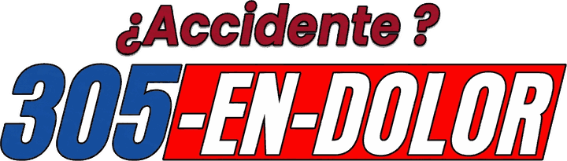

Accident intake landing pages
Three quiz landing pages. Each one shows English or Spanish automatically based on the visitor's phone language. Add ?lang=es or ?lang=en to force a language.
1. Free Case Check
Navy hero with the quiz card above the fold, 14 day Florida urgency band, results, reviews and FAQ.
/payout-check/
2. Case ScanApp style flow: asks the name first, personalizes each question, runs an animated case scan, then collects contact info.
/case-scan/
3. Don't Take the First OfferEditorial headline, quiz with a live "Your Case File" panel, how it works, and what to do after an accident.
/free-check/